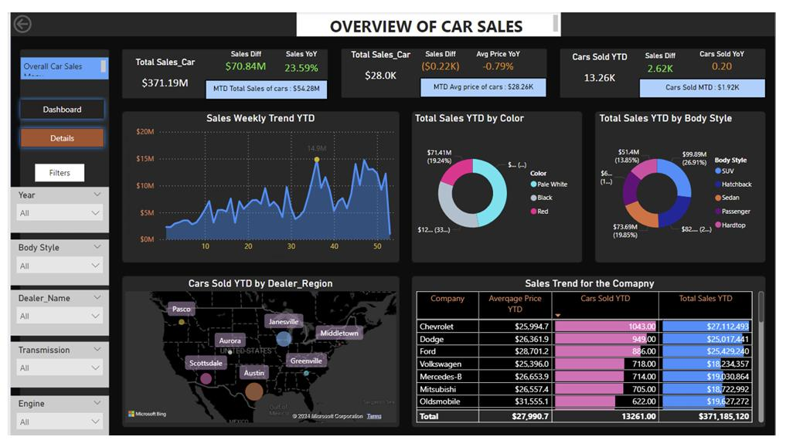
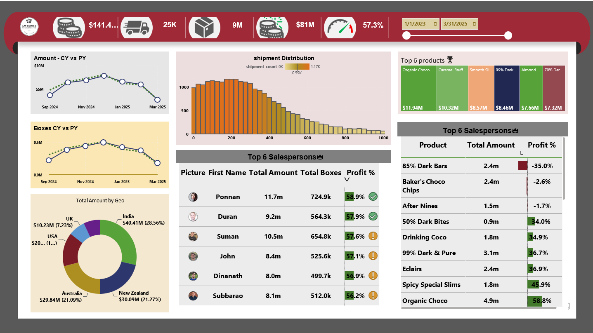

NAVEENGUPI
5+ years building Power BI dashboards and production SQL that give clinical, financial, and operational stakeholders a real-time read on performance — from patient risk scoring to executive revenue reporting.
What I bring to the table
Data analysis and BI development focused on clear reporting, clean data, and dashboards leadership actually uses.
Health IT Data Analyst with 5+ years of experience developing operational and executive dashboards, performing quantitative analysis of healthcare data, and delivering data-driven insights that enable leadership to monitor performance, identify trends, and make informed decisions. Proven expertise in Power BI, Tableau, Excel, and SQL with a track record of building recurring and ad hoc reports, validating data quality, and presenting findings to stakeholders. Deep healthcare analytics experience including claims, eligibility, and operational data analysis. Skilled in trend analysis, forecasting, and statistical techniques with strong documentation and business rule standardization practices.
Core competencies
Comprehensive expertise across BI development, data analysis, healthcare analytics, and governance.
BI & Visualization
- Power BI (Desktop, Service, DAX, Power Query)
- Tableau
- Dashboard Design
- Executive Reporting
- KPI Development
- Data Storytelling
- Self-Service Analytics
Data Analysis & Reporting
- SQL
- Excel (Advanced, VBA, PivotTables)
- Quantitative Analysis
- Trend Analysis & Forecasting
- Statistical Methods
- Ad Hoc & Recurring Reporting
Cloud & Data Platform
- SQL Server
- Azure SQL Database
- Azure Databricks
- Microsoft Fabric
- Azure Data Factory
- AWS (S3, EMR, Glue, Lambda)
Programming & Automation
- Python (Pandas, NumPy, Scikit-learn)
- PySpark (MLlib)
- R
- VBA
- Git
- ETL / ELT
Healthcare Analytics
- Claims Analysis
- Eligibility Data
- Provider Directories
- Clinical Metrics
- Population Health
- Operational Performance
Data Quality & Governance
- Data Validation
- Anomaly Investigation
- Root-Cause Analysis
- Data Quality Frameworks
- Metadata Documentation
- Business Rules Standardization
Security & Compliance
- HIPAA Compliance
- PHI / PII Governance
- Row-Level Security
- Governed Power BI Workspaces
Stakeholder & Delivery
- Requirements Gathering
- Executive Presentations
- Cross-Functional Collaboration
- Government Stakeholder Communication
- Agile Delivery
- Project Documentation
Dashboards built end-to-end
Source data cleanup, star-schema modeling, DAX measures, and a visualization layer designed for a specific decision — not just a data dump.

Car Sales Analytics Dashboard
Dealership sales data was scattered across spreadsheets and legacy tools with no unified view of performance. Built a single interactive Power BI dashboard consolidating transaction-level data into an executive KPI view, plus drill-downs by time, region, body style, and manufacturer.

Candy Sales Profitability Dashboard
Revenue volume alone was masking a margin problem. Designed a profitability-first dashboard layering cost and margin analysis on top of standard sales reporting, broken out by product, sales team, and geography.
Production-style SQL, not textbook joins
Three query sets written against a modeled healthcare schema. Each ends in a CREATE OR ALTER VIEW so the output plugs straight into a BI-ready semantic layer. Click a query to expand it.
Patient Risk Stratification
Scores each patient 0–6 on blood pressure, heart rate, and 90-day ED utilization, then buckets them into Low / Moderate / High Risk for care-management prioritization.
/* 1. Pull patient demographics and diagnoses */
WITH PatientBase AS (
SELECT
p.PatientID,
p.Age,
p.Gender,
d.DiagnosisCode,
d.DiagnosisDescription,
CASE
WHEN d.DiagnosisCode LIKE 'I1%' THEN 'Hypertension'
WHEN d.DiagnosisCode LIKE 'E11%' THEN 'Diabetes'
WHEN d.DiagnosisCode LIKE 'J4%' THEN 'COPD'
ELSE 'Other'
END AS ConditionGroup
FROM dbo.Patients p
LEFT JOIN dbo.PatientDiagnoses d
ON p.PatientID = d.PatientID
),
/* 2. Most recent vitals per patient (BP, HR) */
Vitals AS (
SELECT
v.PatientID,
v.VitalType,
v.VitalValue,
v.VitalDate,
ROW_NUMBER() OVER (PARTITION BY v.PatientID, v.VitalType ORDER BY v.VitalDate DESC) AS rn
FROM dbo.Vitals v
WHERE v.VitalType IN ('SystolicBP', 'DiastolicBP', 'HeartRate')
),
LatestVitals AS (
SELECT PatientID, VitalType, VitalValue
FROM Vitals
WHERE rn = 1
),
/* 3. Recent ED visits (utilization risk) */
EDVisits AS (
SELECT
PatientID,
COUNT(*) AS EDVisitCount_Last90Days
FROM dbo.Encounters
WHERE EncounterType = 'ED'
AND VisitDate >= DATEADD(DAY, -90, GETDATE())
GROUP BY PatientID
),
/* 4. Combine vitals into pivoted structure */
VitalsPivot AS (
SELECT
PatientID,
MAX(CASE WHEN VitalType = 'SystolicBP' THEN VitalValue END) AS SystolicBP,
MAX(CASE WHEN VitalType = 'DiastolicBP' THEN VitalValue END) AS DiastolicBP,
MAX(CASE WHEN VitalType = 'HeartRate' THEN VitalValue END) AS HeartRate
FROM LatestVitals
GROUP BY PatientID
),
/* 5. Risk scoring logic using CASE statements */
RiskScores AS (
SELECT
b.PatientID, b.Age, b.Gender, b.ConditionGroup,
v.SystolicBP, v.DiastolicBP, v.HeartRate,
ISNULL(e.EDVisitCount_Last90Days, 0) AS EDVisitCount_Last90Days,
CASE
WHEN v.SystolicBP > 160 OR v.DiastolicBP > 100 THEN 2
WHEN v.SystolicBP BETWEEN 140 AND 160 THEN 1
ELSE 0
END AS BloodPressureRisk,
CASE
WHEN v.HeartRate > 110 THEN 2
WHEN v.HeartRate BETWEEN 90 AND 110 THEN 1
ELSE 0
END AS HeartRateRisk,
CASE
WHEN ISNULL(e.EDVisitCount_Last90Days, 0) >= 3 THEN 2
WHEN ISNULL(e.EDVisitCount_Last90Days, 0) = 2 THEN 1
ELSE 0
END AS UtilizationRisk
FROM PatientBase b
LEFT JOIN VitalsPivot v ON b.PatientID = v.PatientID
LEFT JOIN EDVisits e ON b.PatientID = e.PatientID
),
/* 6. Final risk category */
FinalRisk AS (
SELECT *,
(BloodPressureRisk + HeartRateRisk + UtilizationRisk) AS TotalRiskScore,
CASE
WHEN (BloodPressureRisk + HeartRateRisk + UtilizationRisk) >= 4 THEN 'High Risk'
WHEN (BloodPressureRisk + HeartRateRisk + UtilizationRisk) BETWEEN 2 AND 3 THEN 'Moderate Risk'
ELSE 'Low Risk'
END AS RiskCategory
FROM RiskScores
)
/* 7. Final BI-ready view */
CREATE OR ALTER VIEW dbo.vw_Clinical_RiskStratification AS
SELECT
PatientID, Age, Gender, ConditionGroup,
SystolicBP, DiastolicBP, HeartRate,
EDVisitCount_Last90Days, TotalRiskScore, RiskCategory
FROM FinalRisk;Encounter Cycle Time & Provider Throughput
Validates raw timestamp data, calculates stage-by-stage cycle times (arrival → triage → room → provider → discharge), then ranks providers and clinics on throughput.
/* 1. Join encounters with provider, clinic, and scheduling data */
WITH BaseData AS (
SELECT
e.EncounterID, e.PatientID, e.ProviderID, e.ClinicID,
e.ArrivalTime, e.TriageStartTime, e.RoomedTime,
e.ProviderStartTime, e.DischargeTime,
p.ProviderName, c.ClinicName,
s.ScheduledStartTime, s.VisitType
FROM dbo.EncounterEvents e
INNER JOIN dbo.Providers p ON e.ProviderID = p.ProviderID
LEFT JOIN dbo.Clinics c ON e.ClinicID = c.ClinicID
LEFT JOIN dbo.ProviderSchedule s
ON e.ProviderID = s.ProviderID
AND CAST(e.ArrivalTime AS DATE) = CAST(s.ScheduledStartTime AS DATE)
),
/* 2. Data quality validation using CASE logic */
Validated AS (
SELECT *,
CASE
WHEN ArrivalTime IS NULL THEN 'Missing Arrival'
WHEN TriageStartTime < ArrivalTime THEN 'Invalid Triage Time'
WHEN RoomedTime < TriageStartTime THEN 'Invalid Room Time'
WHEN ProviderStartTime < RoomedTime THEN 'Invalid Provider Time'
WHEN DischargeTime < ProviderStartTime THEN 'Invalid Discharge Time'
ELSE 'Valid'
END AS DataQualityStatus
FROM BaseData
),
/* 3. Calculate cycle times and LOS */
CycleTimes AS (
SELECT *,
CASE WHEN DataQualityStatus = 'Valid'
THEN DATEDIFF(MINUTE, ArrivalTime, TriageStartTime) END AS ArrivalToTriage_Min,
CASE WHEN DataQualityStatus = 'Valid'
THEN DATEDIFF(MINUTE, TriageStartTime, RoomedTime) END AS TriageToRoom_Min,
CASE WHEN DataQualityStatus = 'Valid'
THEN DATEDIFF(MINUTE, RoomedTime, ProviderStartTime) END AS RoomToProvider_Min,
CASE WHEN DataQualityStatus = 'Valid'
THEN DATEDIFF(MINUTE, ProviderStartTime, DischargeTime) END AS ProviderToDischarge_Min,
CASE WHEN DataQualityStatus = 'Valid'
THEN DATEDIFF(MINUTE, ArrivalTime, DischargeTime) END AS TotalLOS_Min
FROM Validated
),
/* 4. Rank encounters and providers using window functions */
Ranked AS (
SELECT *,
ROW_NUMBER() OVER (PARTITION BY ProviderID ORDER BY TotalLOS_Min DESC) AS EncounterLOS_RowNum,
RANK() OVER (PARTITION BY ClinicID ORDER BY TotalLOS_Min ASC) AS ClinicThroughputRank
FROM CycleTimes
WHERE DataQualityStatus = 'Valid'
),
/* 5. Aggregate provider-level KPIs */
ProviderAgg AS (
SELECT
ProviderID, ProviderName, ClinicID, ClinicName,
COUNT(*) AS TotalEncounters,
AVG(TotalLOS_Min) AS AvgLOS_Min,
AVG(ArrivalToTriage_Min) AS AvgArrivalToTriage_Min,
AVG(RoomToProvider_Min) AS AvgRoomToProvider_Min,
AVG(ProviderToDischarge_Min) AS AvgProviderToDischarge_Min,
RANK() OVER (ORDER BY AVG(TotalLOS_Min)) AS ProviderPerformanceRank
FROM Ranked
GROUP BY ProviderID, ProviderName, ClinicID, ClinicName
)
/* 6. Final BI-ready view */
CREATE OR ALTER VIEW dbo.vw_Provider_Operational_KPIs AS
SELECT
ProviderID, ProviderName, ClinicID, ClinicName,
TotalEncounters, AvgLOS_Min, AvgArrivalToTriage_Min,
AvgRoomToProvider_Min, AvgProviderToDischarge_Min, ProviderPerformanceRank
FROM ProviderAgg;Chronic Medication Compliance
Flags patients on chronic medications (Metformin, Lisinopril, Atorvastatin) as compliant or non-compliant based on whether the right lab test was run within the clinical window, then rolls compliance rate up by medication.
/* 1. Identify active patients on chronic medications */
WITH ActivePatients AS (
SELECT
p.PatientID, p.Age, p.Gender,
m.MedicationName, m.StartDate, m.EndDate,
CASE
WHEN m.EndDate IS NULL OR m.EndDate >= GETDATE() THEN 1
ELSE 0
END AS IsActiveMedication
FROM dbo.PatientMedication m
INNER JOIN dbo.Patients p ON m.PatientID = p.PatientID
WHERE m.MedicationName IN ('Metformin', 'Lisinopril', 'Atorvastatin')
),
/* 2. Pull most recent lab results for each patient */
RecentLabs AS (
SELECT
l.PatientID, l.LabName, l.LabValue, l.LabDate,
ROW_NUMBER() OVER (PARTITION BY l.PatientID, l.LabName ORDER BY l.LabDate DESC) AS rn
FROM dbo.LabResults l
WHERE l.LabName IN ('A1C', 'Creatinine', 'Lipid Panel')
),
LatestLabs AS (
SELECT PatientID, LabName, LabValue, LabDate
FROM RecentLabs
WHERE rn = 1
),
/* 3. Clinical compliance logic using CASE statements */
Compliance AS (
SELECT
a.PatientID, a.Age, a.Gender, a.MedicationName, a.IsActiveMedication,
l.LabName, l.LabValue, l.LabDate,
CASE
WHEN a.MedicationName = 'Metformin'
AND l.LabName = 'A1C'
AND l.LabDate >= DATEADD(MONTH, -6, GETDATE())
THEN 'Compliant'
WHEN a.MedicationName = 'Lisinopril'
AND l.LabName = 'Creatinine'
AND l.LabDate >= DATEADD(YEAR, -1, GETDATE())
THEN 'Compliant'
WHEN a.MedicationName = 'Atorvastatin'
AND l.LabName = 'Lipid Panel'
AND l.LabDate >= DATEADD(YEAR, -1, GETDATE())
THEN 'Compliant'
ELSE 'Non-Compliant'
END AS ComplianceStatus
FROM ActivePatients a
LEFT JOIN LatestLabs l ON a.PatientID = l.PatientID
),
/* 4. Aggregate compliance rates by medication */
MedicationAgg AS (
SELECT
MedicationName,
COUNT(*) AS TotalPatients,
SUM(CASE WHEN ComplianceStatus = 'Compliant' THEN 1 ELSE 0 END) AS CompliantPatients,
CAST(SUM(CASE WHEN ComplianceStatus = 'Compliant' THEN 1 ELSE 0 END) AS FLOAT)
/ NULLIF(COUNT(*), 0) AS ComplianceRate
FROM Compliance
WHERE IsActiveMedication = 1
GROUP BY MedicationName
)
/* 5. Final BI-ready view */
CREATE OR ALTER VIEW dbo.vw_Clinical_Medication_Compliance AS
SELECT MedicationName, TotalPatients, CompliantPatients, ComplianceRate
FROM MedicationAgg;Recent impact
Five years across payer, provider, and delivery-partner environments.
- Developed 5+ operational and executive Power BI dashboards used by 200+ stakeholders across Finance, Operations, Clinical, and Compliance.
- Ran quantitative analysis on claims, eligibility, and provider metrics; recurring and ad hoc reporting improved operational efficiency by 25%.
- Root-caused data integrity issues, improving reporting accuracy by 20% and cutting downstream errors.
- Built automated data-quality monitoring in Python and SQL, cutting manual validation effort by 15 hrs/week.
- Implemented row-level security and governed Power BI Service workspaces to maintain HIPAA compliance.
- Mined production data across 5+ source systems (Python, SQL, PySpark) for global healthcare clients.
- Built predictive statistical models (Python, Spark MLlib) that improved forecast accuracy by 18%.
- Automated ETL pipelines with AWS Glue and Python for consistent, high-quality reporting datasets.
- Coordinated onshore/offshore Agile delivery, shipping BI work 15% ahead of deadline on average.
- Built 4+ executive dashboards on star-schema data models for a major payer environment.
- Authored complex SQL for source-to-target validation across sensitive healthcare schemas.
- Developed forecasting models on patient volume and revenue-cycle data, reaching 92% forecast accuracy.
Academic foundation
Strong educational background in computer science and electronics engineering.
Industry credentials
Completed, in-progress, and targeted certifications supporting healthcare and BI-focused roles.
Ready for Data Analyst & BI Developer roles
Continental US, remote-first, open to relocation. Currently exploring federal and health-IT adjacent opportunities where dashboards and SQL actually move a decision.
Tap to call, email, or connect instantly.
Call / Text(561) 465-6601 → Email
naveen.gupi2000@gmail.com → LinkedIn
Connect professionally → GitHub
View Power BI & SQL work →